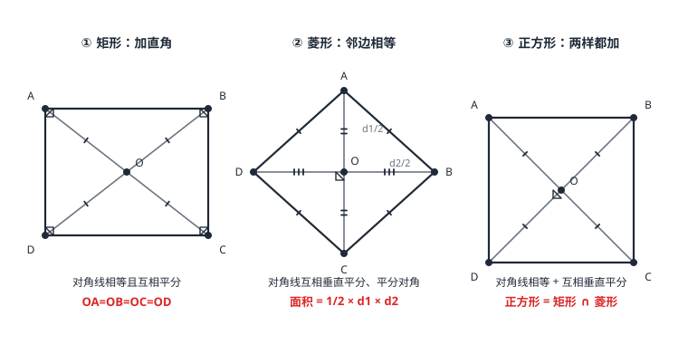

矩形、菱形、正方形
在平行四边形上加限制：加「一个直角」得矩形——对角线相等，直角三角形斜边上的中线等于斜边的一半；加「一组邻边相等」得菱形——对角线互相垂直平分，面积 =\tfrac12 d_1 d_2；两个旋钮都拧满得正方形——既是矩形又是菱形。对角线是观察窗：相等看矩形，垂直看菱形，又等又垂看正方形。
| 所属主题 | 四边形 |
|---|---|
| 所属模块 | 几何 |
| 课标学段 | 第四学段（7~9 年级） |
| 前置知识 | 平行四边形、等腰三角形与等边三角形、直角三角形与勾股定理 |
| 核心素养 | 推理能力几何直观运算能力 |
教材定位
人民教育出版社《人教版（2024版）义务教育教科书·数学》
八年级下册第21章 四边形21.3 特殊的平行四边形
对应八下 21.3：矩形、菱形、正方形的判定与性质。
说明
矩形：有一个角是直角的平行四边形。由邻角互补，一个直角会连锁带动其余三个角全成直角。核心性质：对角线相等且互相平分——交点 O 到四个顶点距离相等（OA=OB=OC=OD）。判定：有一个直角的平行四边形、有三个角是直角的四边形、对角线相等的平行四边形。
菱形：有一组邻边相等的平行四边形（连锁带动四边全相等）。核心性质：对角线互相垂直平分，且每条对角线平分一组对角。两条独家武器：面积 =\tfrac12 d_1 d_2（两条对角线乘积的一半，不用高也能算）；对角线把菱形拆成两对等腰三角形，接 等腰三角形与等边三角形 的三线合一。判定：一组邻边相等的平行四边形、四边相等的四边形、对角线互相垂直的平行四边形。
正方形：一组邻边相等的矩形（也是一个直角的菱形）——同时坐在矩形和菱形的交椅上，四条性质全继承：四边相等、四角皆直角、对角线相等且互相垂直平分、每条对角线平分一组对角（各 45^\circ）。集合关系：\\text正方形\=\\text矩形\\cap\\text菱形\（图 1 三个图形并排对照）。
使用场景
门框与窗框质检：矩形对角线相等——量两条对角线是否一样长，是工地验收门框、窗框「方不方」的标准动作，比量四个角快得多。
菱形裁剪与花坛设计：两条互相垂直的折痕作对角线，四端连线即得菱形；对角线交乘算面积（\tfrac12 d_1 d_2）让设计者不用量斜边、不用量高就能估算用料。
注意点
判定前先确认「平行四边形」这层底盘：对角线相等 → 矩形、对角线互相垂直 → 菱形，前提都是平行四边形。在任意四边形里，仅对角线相等或互相垂直，得不出这些结论。
矩形与菱形的对角线性质别互换：矩形的对角线「相等且互相平分」但不垂直；菱形的「互相垂直平分」但不相等。正方形两条全占。
「矩形是菱形」或「菱形是矩形」都是错的：两者只在正方形处重叠。说「正方形是矩形」正确，反着说不行。
证明

图 1：矩形——对角线相等且互相平分（OA=OB=OC=OD）；菱形——对角线互相垂直平分；正方形——两者兼有（O 处为 90° 特例）
证明
结论 1矩形的两条对角线相等，且交点 O 到四个顶点等距。
矩形对角线相等：矩形 ABCD 中 \angle ABC=\angle DCB=90^\circ，AB=DC（对边相等），BC 公共——SAS，\triangle ABC\cong\triangle DCB，所以 AC=DB。对角线相等 + 互相平分（平行四边形性质）→ OA=OB=OC=OD，O 到四顶点等距（图 1 ①）。
关键一步依据是 SAS：\angle ABC=\angle DCB=90^\circ 由矩形的定义给出，AB=DC 用的是平行四边形的对边相等，BC 是公共边；全等的对应边给出 AC=DB。再把「对角线互相平分」这条平行四边形性质与「对角线相等」合用，OA=OC、OB=OD 再搭上 OA=OB，四个半径才真正相等。
结论 2直角三角形斜边上的中线等于斜边的一半。
直角斜边中线推论：\triangle ABC 是直角三角形（\angle B=90^\circ），O 是斜边 AC 的中点。由 OA=OB 得 OB=\tfrac12 AC——直角三角形斜边上的中线等于斜边的一半。这是矩形对角线性质的直接赠品，逆用还能证直角。
关键一步依据是上一步的 OA=OB 与中点的定义：O 是 AC 的中点就有 OA=OC=\tfrac12 AC，再由 OA=OB 得 OB=\tfrac12 AC。这条推论反过来还能判直角——斜边中点到三个顶点等距，这个三角形就是直角三角形。
结论 3菱形的两条对角线互相垂直，并且每条对角线平分一组对角。
菱形对角线垂直且平分对角：AB=AD（菱形四边相等），O 是 BD 中点（对角线互相平分），AO 是等腰 \triangle ABD 底边上的中线——由三线合一（等腰三角形与等边三角形）：AO\perp BD 且 AO 平分 \angle BAD。对 BD 同理（图 1 ②）。
关键一步依据是等腰三角形的三线合一（等腰三角形与等边三角形）：AB=AD 使 \triangle ABD 等腰，O 是 BD 中点使 AO 成为底边上的中线，于是三线合一立刻给出 AO\perp BD 与 AO 平分 \angle BAD。换一条对角线同理，两条对角线互相垂直平分就都拿到了。
结论 4菱形面积 =\tfrac12 d_1 d_2。
菱形面积 =\tfrac12 d_1 d_2：对角线把菱形分成四个全等的直角三角形（两直角边各为 d_1/2、d_2/2，用勾股验证斜边即边长：\sqrt(d_1/2)^2+(d_2/2)^2）。每个小三角形面积 =\tfrac12\cdot\tfracd_12\cdot\tfracd_22=\tfracd_1 d_28，四个合计 \tfracd_1 d_22（图 1 ②）。
关键一步依据是对角线互相垂直平分：菱形被两条对角线切成四个全等的直角三角形，每个小三角形的两条直角边正好是两条对角线的一半，即 d_1/2 与 d_2/2；面积按「直角三角形面积等于两直角边乘积的一半」算出，四个一加就是 \tfrac12 d_1 d_2。这样算面积不必另求高。
动手实验
两根不等长的细棒在中点处固定成可以转动的十字（保持垂直），把四个端点依次连线：转到的任何位置，四条连线段都相等——这是一个会变形的菱形（对角线互相垂直平分 → 四边相等）。量任一位置的两条半对角线 d_1/2、d_2/2，验证边长 =\sqrt(d_1/2)^2+(d_2/2)^2。
解题思路
矩形计算三板斧：对角线相等（AC=BD）+ 互相平分（OA=\tfrac12 AC）+ 直角三角形勾股。看到「对角线夹角 60^\circ」立刻想 \triangle AOB 等边——OA=OB 顶角 60^\circ，三边全等。
菱形计算两件套：对角线的一半作直角边、边长作斜边（勾股）；面积走 \tfrac12 d_1 d_2，或底乘高（高需要另求时多半不如前者快）。
正方形：边长 a、对角线 d=\sqrt2 a，面积 a^2 或 \tfrac12 d^2；判定写全条件——「邻边相等的矩形」或「一个直角的菱形」，缺一项都不严。
按场景的例题
例 1（场景：测量与工程） 矩形钢板画线
矩形钢板 ABCD 的对角线交于 O，量得 \angle AOB=60^\circ，AB=4 米。求对角线 AC 的长与另一边 BC 的长。
解：矩形对角线相等且互相平分：OA=OB=\tfrac12 AC。\triangle AOB 中 OA=OB，顶角 \angle AOB=60^\circ，两底角各 60^\circ——等边三角形，故 OA=AB=4，AC=2× 4=8（米）。再在直角 \triangle ABC 中用勾股：BC=\sqrtAC^2-AB^2=\sqrt64-16=\sqrt48=4\sqrt3\approx 6.9（米）。
答：AC=8 米，BC=4\sqrt3\approx 6.9 米。
例 2（场景：图形设计） 菱形花坛围栏
菱形花坛的两条对角线分别长 12 米和 16 米。求花坛的边长（围栏每边长）、面积与周长。
解：对角线互相垂直平分，半对角线为 6 和 8。边长 =\sqrt6^2+8^2=\sqrt36+64=\sqrt100=10（米）。面积 =\tfrac12× 12× 16=96（平方米）。周长 =4× 10=40（米）。顺带验证面积路线一致：\tfrac12 d_1 d_2=96。
答：边长 10 米，面积 96 平方米，周长 40 米。
例 3（场景：竞技与游戏） 正方形棋盘
一块正方形棋盘的对角线长 6 分米。求棋盘的边长与面积。
解：设边长 a。对角线 d=\sqrt2 a=6，故 a=6/\sqrt2=3\sqrt2（分米）。面积 =a^2=(3\sqrt2)^2=18（平方分米）；也可以直接用对角线：面积 =\tfrac12 d^2=\tfrac12× 36=18，两条路互验一致。
答：边长 3\sqrt2 分米，面积 18 平方分米。
常用推论
矩形每个顶点连接对角线交点，把矩形分成四个等腰三角形；\angle AOB 确定时它们全部确定——\angle AOB=60^\circ 时上下两个是等边三角形（AB=\tfrac12 AC 的来源）。
菱形对角线长之比决定「胖瘦」：d_1=d_2 时四个内角都是 90^\circ——菱形转成正方形（此时它同时是矩形），这是「正方形 = 矩形 \cap 菱形」的动态版。
直角三角形斜边中线 =\tfrac12 斜边，逆命题同样好用：三角形一边上的中线等于该边一半 → 这个三角形是直角三角形（可用于证垂直）。
易错点
错四条边相等的四边形是正方形。
为什么错四边相等只保证它是菱形；直角这一条件没满足时四个角是斜的。
正确四边相等 + 一个直角才是正方形。
错用边长平方算菱形面积（S=a^2）。
为什么错a^2 是正方形（角为直角）的面积；菱形角一般不是直角。
正确菱形面积 =\tfrac12 d_1 d_2 或底 × 高。
错认为矩形对角线互相垂直。
为什么错把矩形与菱形的对角线性质记混；矩形只保证「相等 + 平分」。
正确矩形对角线相等且互相平分；互相垂直是菱形的性质（正方形兼有）。
直观理解
把平行四边形想成一台有两个旋钮的机器：拧「直角」旋钮得到矩形，拧「邻边相等」旋钮得到菱形，两个都拧满就是正方形。对角线是仪表盘：指针指「相等」说明矩形档位已挂上，指「垂直」说明菱形档位已挂上，两盏灯同时亮即正方形。矩形像把平行四边形「拉方正」，菱形像把它「压扁拉匀」——正方形是两者握手言和的那一档。